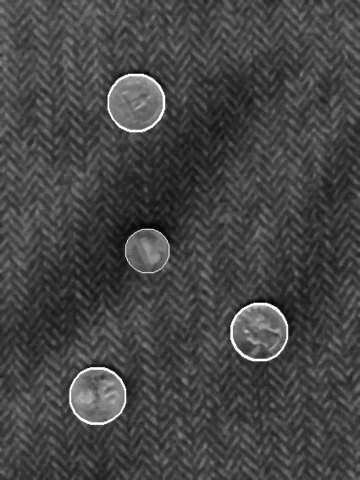

C. Boredom
|
Some movies are terribly boring. You just have to do something, and you noticed that a 2
Euro coin in your pocket would just fit the circular pattern on the seat of the tall, constantly
texting guy sitting in front of you.
| |

|
Given a set of points, the X coordinates and Y coordinates separated and shuffled (so you don't know which X belongs to which Y), decide whether it's possible to arrange the coordinates together so they fit on a circle (of a finite, non-zero radius).
Input
- Line 1: number of test cases
- Line 2: number of coordinates for test case 1
- Line 3: x coordinates for test case 1
- Line 4: y coordinates for test case 2
- Line 5: number of coordinates for test case 2
- etc.
Output
- Line 1: answer for test case 1, "yes" or "no" (without quotes)
- Line 2: answer for test case 2.
- etc.
Example input
3
3
3.01000000 4.01000000 5.01000000
3.05210000 4.05210000 5.05210000
4
1.21875432 4.00031472 12.00000000 132.12605874
0.00000000 0.00000000 0.00000000 0.00000000
5
1.12345678 1.12345678 1.12345678 1.12345678 1.12345678
13.01010101 13.01010101 13.01010101 13.01010101 13.01010101
| Example output
YES
NO
NO
|